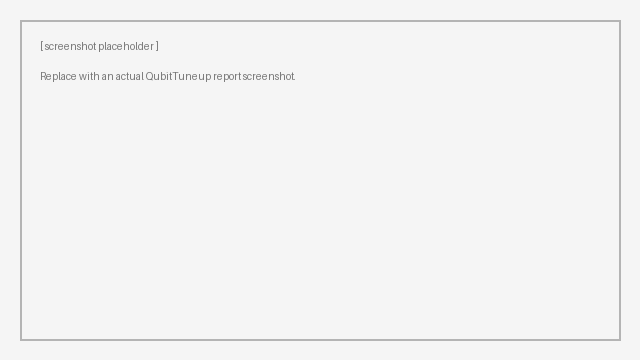

Protocols#
A protocol is a tree of operations and (optional) conditions executed in sequence. The simplest shape is one root branch with a flat list of operations — that is what most real protocols use. Branches and conditions are there for the smaller number of cases where the flow needs to be dynamic.
This page assumes you have read Parameters and Operations.
Picking a platform#
Call select_platform once
at the top of your script or notebook, before instantiating any
ProtocolBase:
from labcore.protocols import select_platform
select_platform("DUMMY") # in-memory, for tests and examples
# or
select_platform("QICK") # real RFSoC hardware
# or
select_platform("OPX") # Quantum Machines OPX
This is the global signal that tells parameters and operations which
platform-specific getter/setter to dispatch to. Instantiating a protocol
without first calling
select_platform raises
ValueError("Please choose a platform").
You only need to call this once per process. A notebook running exploratory operations, a script running a full protocol, and a unit test all pick their own platform at startup and stick with it.
A simple protocol — the flat case#
A protocol is a class that subclasses
ProtocolBase, sets a
root_branch, and pushes operations onto it. Here is
QubitTuneup
from CQEDToolbox, which is exactly the flat case:
from pathlib import Path
from labcore.protocols.base import ProtocolBase, BranchBase
from cqedtoolbox.protocols.operations import (
ResonatorSpectroscopy, ResonatorSpectroscopyVsGain,
SaturationSpectroscopy, PowerRabi, PiSpectroscopy,
ResonatorSpectroscopyAfterPi, ReadoutCalibration,
T1Operation, T2EOperation, T2ROperation,
)
class QubitTuneup(ProtocolBase):
def __init__(self, params, report_path: Path = Path(".")):
super().__init__(report_path)
self.root_branch = BranchBase("QubitTuneup")
self.root_branch.extend([
ResonatorSpectroscopy(params),
ResonatorSpectroscopyVsGain(params),
SaturationSpectroscopy(params),
PowerRabi(params),
PiSpectroscopy(params),
ResonatorSpectroscopyAfterPi(params),
T1Operation(params),
T2ROperation(params),
T2EOperation(params),
ReadoutCalibration(params),
])
A few things worth pointing out:
The protocol’s name is
self.__class__.__name__by default — no need to set it explicitly. It shows up in logs and as the title of the report.paramsflows down to every operation. It is the persistence handle the parameters proxy through (typically aninstrumentserverparameter-manager proxy on real hardware;NoneonDUMMY). See Parameters.BranchBase.extend([...])adds a list of operations in one call;BranchBase.append(op)adds them one at a time. Both return the branch so you can chain.
To run it:
qt = QubitTuneup(params=my_proxy, report_path=Path("./reports"))
qt.execute()
Running and inspecting a protocol#
execute() walks the root branch, runs each operation through its full
lifecycle, and assembles a final HTML report. Three outputs are worth
checking:
qt.execute()
qt.success # True / False / None
# None means execute() was not called
qt.executed_items # list of operations and conditions that actually ran
# (with their report_output filled in)
Before any operation runs, the protocol calls verify_all_parameters(),
which asks every input parameter to read from its persistence backend. If
any read raises (a missing parameter, an unset value), the protocol logs
the failure and exits with success = False without ever calling
measure. Correction parameters are skipped — there is no hardware to
verify them against.
If a particular operation’s correct() returns FAILURE, the protocol
stops at that operation, sets success = False, and assembles a report
that includes everything that ran up to the failure.
The protocol report#
At the end of execute(), the protocol writes a self-contained HTML
report to:
<report_path>/<ProtocolName>_report/
The report has a table of contents linking to one section per operation or condition that ran, in execution order. Inside each section you will find:
The operation’s
report_outputrendered as MarkdownAny figures the operation appended to its
figure_paths, embedded inline as base64 data URIs (so the file stands on its own and is emailable)The check-results table the default
correct()writes on every attemptAny “old → new” lines from registered success updates
“ATTEMPT N” headers when an operation retried

Warning
Re-running a protocol overwrites the previous report directory. Copy
or rename <report_path>/<ProtocolName>_report before re-running if you
want to keep a prior run.
Super-operations: a retry boundary around several operations#
A
SuperOperationBase
is a composite operation: a sequence of several operations that the
protocol treats as a single unit. The whole group shares one retry
boundary — if any sub-operation fails, the super-operation is what
retries, not the individual sub-operation.
from labcore.protocols import SuperOperationBase
class CalibrationSuite(SuperOperationBase):
def __init__(self, params):
super().__init__()
self.operations = [
ResonatorSpectroscopy(params),
PowerRabi(params),
PiSpectroscopy(params),
]
def evaluate(self) -> EvaluateResult:
# called after all sub-operations have run
# decide whether the calibration as a whole was good enough
...
A super-operation participates in a protocol the same way a regular operation does — push it onto a branch alongside individual operations:
self.root_branch.extend([
CalibrationSuite(params),
T1Operation(params),
])
Two things to keep in mind:
A super-operation does not have its own
measure/load_data/analyze. The sub-operations handle their own measurements; the super only sees the aggregate when itsevaluateandcorrectrun.Conditions are not allowed inside a super-operation. Use a regular branch if you need branching at that level.
The dummy package ships
DummySuperOperation
as a runnable reference.
Branches and conditions#
For most protocols the root branch with extend([...]) is all you need.
Branches become useful when you need conditional routing — different
sequences of operations depending on something measured earlier in the
run.
A Condition is a node in
the branch tree that evaluates a callable at runtime and routes execution
into one of two branches:
from labcore.protocols.base import Condition, BranchBase
high_snr_branch = BranchBase("HighSNR")
high_snr_branch.append(PiSpectroscopy(params))
low_snr_branch = BranchBase("LowSNR")
low_snr_branch.append(PowerRabi(params))
low_snr_branch.append(PiSpectroscopy(params))
snr_check = Condition(
condition=lambda: my_snr_param() > 5.0,
true_branch=high_snr_branch,
false_branch=low_snr_branch,
name="SNR Check",
)
self.root_branch.extend([
ResonatorSpectroscopy(params),
snr_check,
])
When the protocol reaches snr_check, it calls the lambda, picks one of
the two branches, and walks into it. The unchosen branch is not
executed but is still validated by verify_all_parameters at startup —
parameter problems in either branch surface before the run begins.
The chosen branch’s name and the condition outcome show up in the report as their own section, so it is easy to see which path was taken.
Where to read next#
labcore.testing.protocol_dummyis a runnable catalogue of small example operations and theDummySuperOperationprotocol.CQEDToolbox/protocols/is the largest real-world toolbox built on labcore. It is currently undocumented but is a good source for full-shape parameter and operation examples.